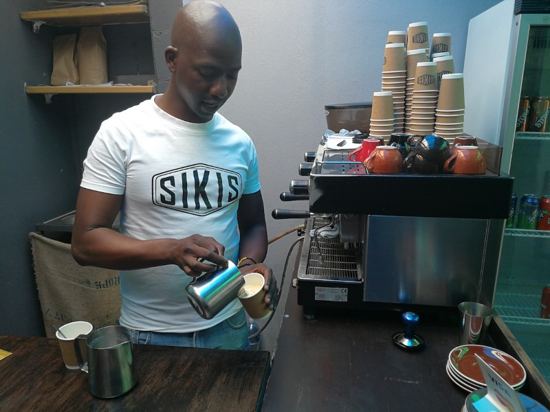

about
Siki koffee Kafe

Siki’s Koffee Kafe is more than a coffee shop: it’s a hub for go-getters, artists, and entrepreneurs in Khayelitsha. Spend a few hours here sipping on a cup of Siki’s signature blend, grab a home-baked muffin and mingle with locals while you catch up on news over the free WiFi.